| |
|
TÜNEL VE AÇ-KAPA TÜNEL
|
|
Her Platform İçin Bir veya İki Tünel Seçimi
Karma Kesitlerin ve Aç-Kapa Tünelin Tanımlanması Tünel Tip Kesitleri Arasındaki Geçişler Koordinat Başlangıcı, Merkez ve Davranış
Kemerin Tanımlanması İnvert Kemerin Tanımlanması Temellerin Tanımlanması Genel Bilgiler Bu menü, daha sonra bir güzergah projesinin farklı tip kesitlerinde çağrılabilecek bir tünel kesitleri tablosu oluşturmaya olanak tanır. Uygulama için bu, bir kesit daha demektir; ancak, enkesit çizimi, metrajların elde edilmesi ve en önemlisi, tünel imalat takibi modülünde özel olarak kullanılması gibi programın diğer bölümlerinde özel olarak kullanılabilmesi için bir dizi yeni yüzey oluşturulur. ISTRAM®/ISPOL®, iki tür geometri tanımlamaya olanak tanır: analitik ve vektörel. Birincisi, kemerin, invert kemerin, nihai kaplama ve toplam kazı yüzeylerinin görünümünü az veriyle tanımlamayı kolaylaştırır. Ancak aynı yüzeyler, her türlü karmaşıklıkta vektörel olarak da tanımlanabilir. Vektörel geometriler içinde, değişken genişlikler (birden fazla tünel tipi tanımlamayı önler) ve üst döşeme için özel bir kontrol (varsa) gibi bu tür tünellere özgü bazı parametreler sunularak, “diyafram duvar” tipi tüneller tanımlama imkanı sunulur. Her tünel, kesitin geometrik merkezlerine ve platform hattının birkaç koduna ilişkin parametreler kullanılarak inşa edilir; pozitif ve negatif (+ ve -) işaret kuralı, elemanların inşasının sağa (+) veya sola (-) doğru hesaplanacağı anlamına gelir. Tünel / Aç-Kapa Tünel Tip Kesitinin Tanımlanması 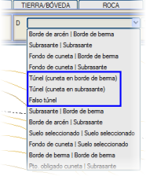Bir tünel kesiti uygulayabilmek için ilk adım, uygulamaya belirli bir tip kesitin tünel tipi olacağını belirtmektir. Yarma tablosunda, KONTROL/HENDEK bölümünde Tünel veya Aç-Kapa Tünel seçeneği beyan edilir. Tünel olması durumunda, iki olasılık vardır:
Daha sonra, TOPRAK/KEMER bölümünde, tünel numarası ve bir aç-kapa tünel durumunda dolgunun ulaştırılmak istendiği yüzey seçilecektir. Tünel durumlarında, ayrıca nihai kaplamanın jeotekstil tabakasının metrajını ve iksanın kalıp metrajını oluşturmak için özel kutucuğu etkinleştirmek de mümkündür, aynı zamanda BIM modelindeki gösterimi de. Kalıp metrajları ikiye ayrılır: iksa için ve topuk için. 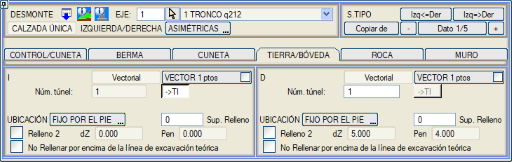
Daha sonra, mevcut eksende uygulanacak farklı tünel tiplerinin geometrisinin tanımlandığı BOYKESİT'teki TÜNELLER menüsüne girilmelidir. Tünellerin tanımı, diğer eksenlerde ve hatta diğer projelerde hemen uygulanabilmeleri için bağımsız dosyalarda saklanabilir. Her Platform İçin Bir veya İki Tünel Seçimi Otoyol durumunda, tünel geometrisini tanımlayan veriler sağa doğru pozitif ve sola doğru negatif olduğundan, sağ ve sol platformlar için farklı tünel kesiti tanımlanmalıdır; bu nedenle tünel simetrik olsa bile bu veriler farklı işaretlere sahiptir. Her platforma bir tünel numarası atamak yeterlidir (ve tabii ki, bunları ilgili bölümde tanımlamak). 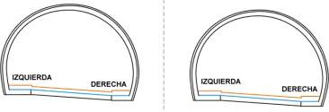
Tek bir tünele ihtiyaç duyulması durumunda, sol için tünel kesiti olarak sıfır (0 yani hiçbiri) seçilmelidir. 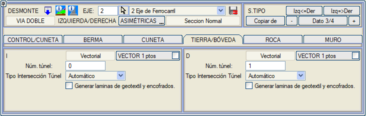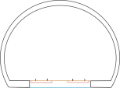
Karma Kesitlerin ve Aç-Kapa Tünelin Tanımlanması Ayrıca, sağ ve sol tarafın tamamen farklı kesitler kullandığı, tünel-açık veya tünel-aç-kapa tünel gibi karma kesitler de tanımlamak mümkündür. 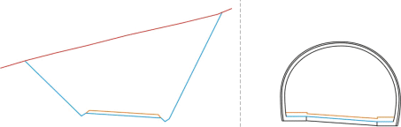
Bu durumlarda, kesiti [ASİMETRİK] olarak tanımlamak, KONTROL/HENDEK'te farklı davranışlar ve bu kesimlerde açık refüj (geometrik kesişimin hesaplanabilmesi için) tanımlamak gerekir: 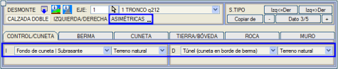
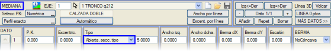 Tünel Tip Kesitleri Arasındaki Geçişler HESAP BÖLGELERİ'nde, farklı tünel geometrisine sahip iki tünel tip kesiti arasında geçişler yapılabilir. Tüneller aynı tipte olmalıdır (vektörel veya analitik). Tünel / Aç-Kapa Tünel Kesiti Tasarımı BOYKESİT menüsünden [TÜNELLER] tablosu açıldığında, birkaç farklı bölgenin gözlemlenebildiği aşağıdaki diyalog kutusu açılır:
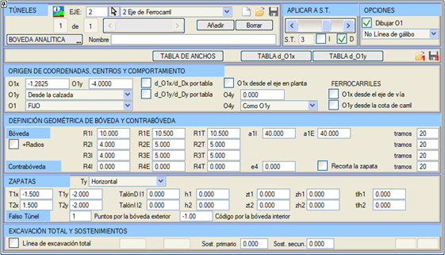
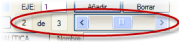Yatay bir kaydırıcı, mevcut eksen için tanımlanmış farklı tünel kesitleri arasında gezinmeye olanak tanır. Bir eksenin her tünel kesiti, tünel numarasıyla tanımlanacaktır. Bir tünel kesitinin geometrisi, dış D ve iç İ yüzeylerini veya tünelin beton iksa ve nihai kaplama olarak da adlandırılan iki yüzeyi temsil eden iki yüzeyde saklanır. Ayrıca, üçüncü bir T yüzeyi veya toplam kazı hattı da oluşturulabilir. 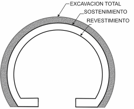Program aşağıdaki çizgi tiplerini kullanır:
Analitik Tanım 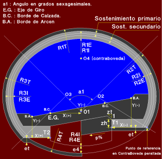TÜNELLER menüsünde gösterilen model, tünel kesitinin analitik tanımında yer alan farklı parametrelerin beyanında kullanıcıya rehberlik eder. KOORDİNAT BAŞLANGICI, MERKEZ VE DAVRANIŞ Uygulama, kemeri tanımlamak için üç merkez ve invert kemeri uygulayan dördüncü bir merkez kullanan bir tünel kesiti tanımlamaya olanak tanır. O1 kemer merkezinin O1X, O1Y koordinatları şunlardır:
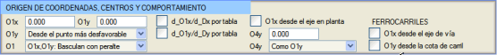
Bu noktanın tam olarak yerleştirilmesi ayrıca aşağıdaki varyantları da kullanabilir:
Ayrıca, kemerin deverle nasıl hareket ettiği de belirtilmelidir:
Tabloların beyanına erişim, [TABLO d_O1x] ve [TABLO d_O1x] düğmeleri aracılığıyla yapılır. Bunların bir tünelde kullanımını etkinleştirmek için, d_O1x/d_Dx tabloya göre ve d_O1y/d_Dy tabloya göre seçeneklerini etkinleştirmek yeterlidir. İlk sütunu KM'ler ve ikinci sütunu mesafeler için ayrılmış .pkd uzantılı dosyaları yükleyebilir  veya kaydedebilirsiniz veya kaydedebilirsiniz  . .KEMERİN TANIMLANMASI 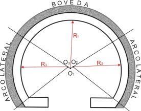D1Y ve İ1Y, O1 noktasında merkezlenmiş ve a1 derecelik bir yayı kapsayan kemerin sırasıyla dış ve iç yarıçaplarıdır. Bu yay, dış veya iksa yüzeyi (a1D) için, iç veya nihai kaplama yüzeyi (a1İ) için farklı olabilir. D2Y ve İ2Y, tünelin sağ tarafının dış ve iç yarıçaplarıdır. Eğer Y=0 ise, bu taraf düz olacaktır. D3Y ve İ3Y, tünelin sol tarafının dış ve iç yarıçaplarıdır. Eğer Y=0 ise, bu taraf düz olacaktır. İ4Y ve D4Y, invert kemerin iç ve dış yarıçaplarıdır; kullanılan merkezin konumuna ve yarıçaplara bağlı olarak farklı sonuçlar elde edilir. + Yarıçaplar, yanal parametreyi 2 farklı yarıçapa ayırmaya olanak tanır, böylece 3 yarıçaplı kemerler tanımlanabilir. Program, R1, R2 ve R3'e girilen farklı yarıçapların artan değerlere sahip olduğunu kontrol eder. Toplam kazı hattı seçeneği etkinleştirilirse, R1T, R2T, R3T ve R4T yarıçapları, ayrıca temelin altındaki et kalınlığı ve radye yatay olduğunda ve suyun merkezi bir drene boşaltılması istendiğinde uygulanacak pt eğimi de tanımlanmalıdır. Yukarıda tanımlanan yayların her biri, kullanıcı tarafından tanımlanan bir dizi bölüme ayrılır. İNVERT KEMERİN TANIMLANMASI İ4Y ve D4Y, invert kemerin iç ve dış yarıçaplarıdır. Kullanılan merkezin konumuna ve yarıçaplara bağlı olarak farklı sonuçlar elde edilecektir. 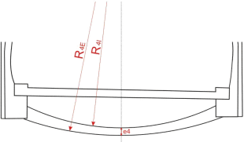
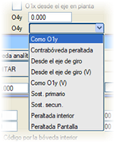 İnvert kemerin dış ve iç yayları eş merkezli olabilir veya olmayabilir ve iç yarıçap dış yarıçaptan daha büyük olabilir. e4 parametresi aracılığıyla invert kemerin minimum kalınlığını tanımlamak mümkündür; e4 = D4y - İ4y ise yayların eş merkezli olduğu, aksi takdirde e4 değerinin sağlanması için iç yarıçapın merkezinin hesaplandığı dikkate alınmalıdır.
O4Y, deveri dikkate alarak kırmızı kota göre invert kemer merkezinin Y koordinatıdır. Aşağıda detaylandırılan birkaç olasılık bulunmaktadır:
İnvert kemer, temelin iç köşesine dayandığında, bir pah oluşturarak temeli kırma imkanı vardır (ilgili seçeneği etkinleştirmek yeterlidir). TEMELLERİN TANIMLANMASI T1x, T1y, T1 noktasının koordinatlarıdır ve T2x, T2y, sırasıyla sağ ve sol banket kenarlarından (veya demiryolları durumunda balast kenarından, kod 11) ölçülen T2 noktasının koordinatlarıdır. Ayrıca, tünel temelinin iç kısmı için bir yükseklik ve bir şev ve terasmanla kesişimi tanımlanmasına izin verilir (parametreler zt2, zh2, zt1 ve zh1). 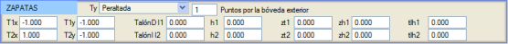
Vektörel olarak tanımlanmış temeller durumunda, tlh1 ve tlh2 kutucukları aracılığıyla iksa topukları tanımlanabilir. Temel kalınlığından daha büyük bir değer verilirse, topukları tanımlayan bir çizgi oluşturulur ve bu topuklara TALON_TUNEL adlı bir metraj eklenir. İKSA metrajı bu metrajı içerir. Bu çizgi, Tünel İmalat Takibi menüsünde, bir püskürtme beton yüzeyine göre TALON metrajını hesaplamak için kullanılır. İmalat takibi enkesitlerinde, topuk püskürtme beton hattına kadar yeniden yapılırsa, püskürtme beton ile teorik kaplama arasında topuğun üzerindeki Kemerin gerçek kaplamasına karşılık gelen yeni bir kapalı yüzey de oluşturulur. 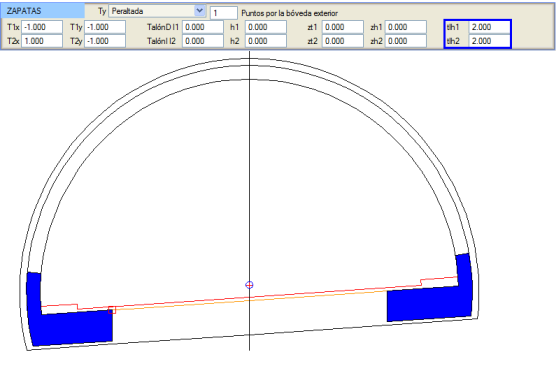 Temeller, Ty parametresiyle kontrol edilir ve program aşağıdaki olasılıkları sunar:
 Diyafram duvarların belirli bir kaya kalınlığına (1, 2, 3...) ulaşması durumunda, T1y ve T2y değerleri kaya jeolojik katmanlarına göredir. Diyafram duvarının vektörel tanımı, programın T1y ve T2y parametrelerini okuyabilmesi için yeterli uzunluğa sahip olmalıdır. Dış kemerdeki noktalar parametresi, 68 hattının yarma kesitini başlatmadan önce dış kemerde kaç segment boyunca ilerleyeceğini tanımlamamızı sağlar. Varsayılan olarak 1'dir, ancak kemeri yukarı doğru taramak için negatif değerlere sahip olabilir. İç kemerdeki kod parametresi, terasman yüzeyinin (L68) dış kemere geçmeden önce bu koda kadar iç kemer boyunca devam etmesini sağlar. Vektörel Tanım. Diyafram Duvar Tüneli 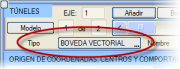Kemer, vektörel olarak da tanımlanabilir. Bunun için, TÜNELLER menüsü içinde [ANALİTİK KEMER] tipi [VEKTÖREL KEMER] tipine değiştirilmelidir. 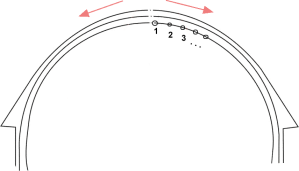İç, dış ve toplam kazı yüzeyleri grafiksel olarak oluşturulabilir veya değiştirilebilir. Genellikle, programın daha sonra her bir belirli KM'de T1 ve T2 noktalarının gerçek konumuna ve hala analitik olan invert kemere göre kesişimi hesaplaması için aşağıya doğru fazla veri olacak şekilde tanımlanırlar. Yüzeylerin tanımının, sağ ve sol taraf için bağımsız çizgiler kullanılarak yapılması ve ayrıca nokta dizisinin resimde görüldüğü gibi yukarıdan aşağıya doğru gitmesi gerektiğini vurgulamak çok önemlidir. Bu kesit tipi, diyafram duvar tipi tünelleri, radyesiz veya radyesiz olarak tasarlamak veya bir tünel açma makinesinin tamamen dairesel kesitini çok basit bir şekilde tanımlamak için en uygun olanıdır (çünkü analitik sistemle, bu durumda var olmayan temeller için yapılması gereken hesaplamanın bir sonucu olarak her zaman küçük bir geometrik kalıntı kalır). 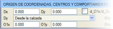Vektörlere ek olarak, bu durumda, vektörlerin (0,0) koordinatlarının dönme eksenine göre göreceli bir yer değiştirmesini tanımlayan Dx ve Dy değerleri de bulunur. Dx değeri, deveri takip ederek uygulanır. 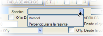Vektörel kemerler için ve dik eğimler durumunda, tanımlanan kesitin kırmızı kota dik olduğu seçilebilir. Analitik kemeri kopyala seçeneği, analitik verilerden başlangıç vektörleri oluşturur ve X'in başlangıcını O1 merkezinin düşeyine yerleştirir, aynı zamanda O1x değerini Dx üzerine kopyalar. 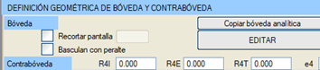O1x değeri, daha sonra deveri takip ederek uygulandığı için vektöre entegre edilmez; bu, her bir KM'de kemerin gerçek kotunu değiştirir. Vektörel tanımlarda, invert kemer tarafından kullanılabilecek O1x, O1y parametreleri bulunur. 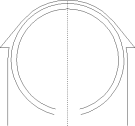Eğer vektörel kemerin deverle birlikte dönmesi isteniyorsa, o zaman Deverle birlikte döner seçeneği etkinleştirilmelidir. Bu seçenek tek hatlı demiryollarında etkinleştirildiğinde, kemer alçak ray etrafında döner. [DÜZENLE] düğmesi, vektörel kemeri değiştirmek için çizgiler araç çubuğu açılmış bir grafik ortam açar. Eğer vektörlerin nokta sayısı 0 ise (düzenlemeye ilk kez girildiğinde), analitik kemer otomatik olarak kopyalanır. Programın bu yüzeyleri sırasıyla toplam kazı, iksa ve nihai kaplama olarak tanıyabilmesi için üç özel çizgi tipi, L9, L7 ve L8 kullanılmalıdır. Bu işi kolaylaştırmak için, bu çizgi tiplerini grafiksel olarak tanımlamaya olanak tanıyan bir diyalog kutusu gösterilir. Kullanıcı bu diyalog kutusunu kapatır ve yeniden çağırmak isterse, dikey menüdeki VEKTÖREL KEMER düğmesine tıklamalıdır. 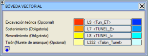
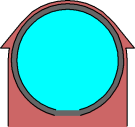Kemerin grafik düzenlemesinden çıkıldığında, iç, dış ve teorik kazı yüzeylerinin nasıl kaldığını gösteren doldurulmuş çizgilerle bir çizim gösterilir ve çıkmak için onay istenir. Bu, ilgili çizgilerin geometrisindeki, yönelimindeki veya tiplerindeki hataları kolayca tespit etmeyi sağlar. Güvenlik amacıyla, daha sonraki bir oturumda geri yüklenebilecek bir IS#EP.edm dosyası da oluşturulur. Vektörel temel durumunda, bir topuk veya başlangıç duvarı bağımsız olarak vektörel bir şekilde tanımlanabilir. Topuk veya başlangıç duvarının yapım şeması, tüneller menüsünün şemasında bulunmaktadır. İnşa edileceği çizginin 332 numaralı çizgi olması ve şemaya göre başlayıp bitmesi önemlidir. Metraj, TÜNEL TOPUĞU olarak verilecektir. 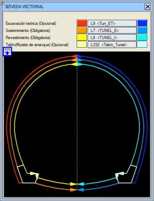
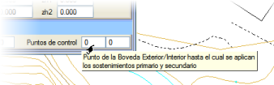Vektörel temelli vektörel tünel için, birincil ve ikincil iksaların dış/iç kemerin hangi noktasına kadar uzandığını tanımlama imkanı vardır. DİYAFRAM DUVAR TÜNELİ Eğer bir tünel H şeklinde diyafram duvarlarla vektörel olarak tanımlanırsa, Diyafram duvarı kırp seçeneği ile, diyafram duvarların sağlam zeminden taşan kısmı kaldırılır. Eğer döşeme sağlam zeminden taşarsa, döşemenin tavan seviyesinde kesilir. H'deki diyafram duvarının vektörel tanımında, döşemeden taşan tüm kısmın, kemerin dış yüzeyini tanımlayan çizgiyle oluşturulması gerektiği hatırlatılır. Bir YK değeri kabul edilir: diyafram duvarının araziyle dış kesişimi üzerindeki tepe yüksekliği. Diyafram duvarı bir derinliğe (YK < 0) kırpma seçeneği etkinleştirilirse, her iki tarafın en elverişsiz, yani en alçak yüksekliğine kırpmak için yeni seçenek etkinleştirilebilir.  GENİŞLİK TABLOSU 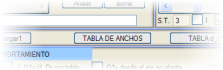Diyafram duvarlarla veya başka herhangi bir vektörel olarak tanımlanmış tünelle yapılan tüneller için, bu genişlik tablosu, tip kesitten bağımsız olarak değişken bir genişlik tanımlamaya olanak tanır. Değişken genişlikler bölgesinde, program tünelin geometrisini esnetir veya daraltır ve dış kemeri (iksa) tanımlayan vektörün ikinci noktasını tabloda belirtilen mesafeye getirir. 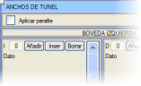Tablonun verileri, ilk KM'den önce ve son KM'den sonra ekstrapole edilmez; bu bölgelerde tünel için tanımlanan geometriye uyulur. Bu genişlik tablosunun tanımında Deveri uygula seçeneği bulunur. Bu seçenek etkinleştirildiğinde, değişken genişliğin uygulandığı başlangıç ve bitiş segmentleri de deverin eğimini alır. Çift kemer durumunda, her birinde farklı genişlikler tanımlanabilir. Bu tablolar, çizgiye göre genişlikler aracılığıyla tanımlanabilir. 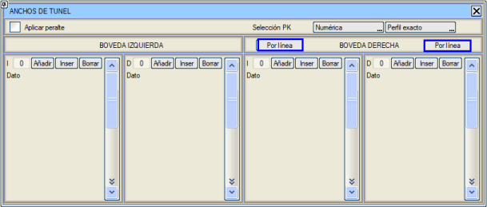
Aç-Kapa Tünel Kesiti ISTRAM®/ISPOL®, tanımlanmış tünel kesitini, vektörlerle tanımlanmış şevlerle birleştirerek, bir aç-kapa tünel kesiti tanımlamak ve birleşik bir kesite karşılık gelen sonuçları elde etmek için kullanabilir. Başka bir deyişle, yarma kesitinin tüm geometrik ve hacimsel sonuçları (toprak ve kaya yarması, şev aplikasyon raporları vb.) ve birleşik hesaplamalar yapmaya gerek kalmadan tünele karşılık gelen sonuçlar elde edilecektir. YARMA'nın [KONTROL/HENDEK] menüsünde Aç-Kapa Tünel seçeneği bulunur. Bu seçenek etkinleştirildiğinde şunları tanımlamaya izin verilir:
Aç-Kapa tüneldeki kazı için, uygun olmayan arazi için toprak yarma şevini doğrulayan ->UA seçeneği kullanılabilir. YARMA'nın TOPRAK/KEMER menüsünde, aç-kapa tüneller durumunda tünel numarasının yanında ikinci bir dolgu tanımlanabilir. İki dolgunun ayırım ufku, tünel kemerinin tepe noktasına göre bir dZ kot artışı ve bir eğim ile tanımlanır (pozitif bir değer, sağa doğru inen bir eğimi gösterir). Metrajlarda o zaman Aç-Kapa Tünel Dolgusu ve Aç-Kapa Tünel Dolgusu 2 ölçümleri yansıtılacak, ayrıca 771 çizgisi aracılığıyla aç-kapa tünel dolgusunun görünen yüzeyleri ve 772 çizgisi aracılığıyla aç-kapa tünel dolgusu 2'nin dolgusu oluşturulacaktır. Şev, Vektörel veya 3D Çizgi MODUNDA tanımlanabilir.  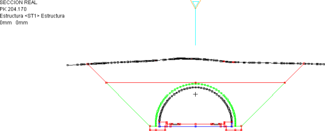
Aç-kapa tüneller durumunda, kullanıcı ayrıca aşağıdaki hususları da göz önünde bulundurmalıdır:
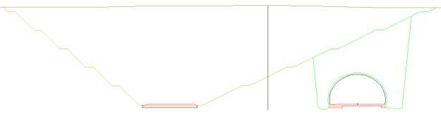
Bu kesiti oluşturmak için, hendek şevinin içi için tip kesiti uygulayacağımız bir açık refüj oluşturmamız gerekecektir. Diğer yandan, hesaplama bölgesinde, yarma menüsünde asimetrik olma özelliğine sahip (sağda aç-kapa tünel ve solda örneğin kontrol noktası / hendek tabanında / palye kenarında) bir X tip kesiti tanımlayacağız. Son olarak, tüneller menüsünde ilgili tünel kesitimizi tanımlamamız gerekecektir.
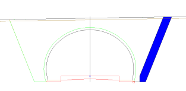
Gabari Hattı  Gabari hattı seçeneği, tünel imalat takibi modülünde bulunan seçeneğe benzer. Etkinleştirildiğinde, 11 veya -11 kodunda (banket kenarları) platforma dik bir çizgi oluşturur ve nihai kaplama yüzeyini keser. Ayrıca, enkesitler GALIBO.gut bilgi bandıyla çizilirse, bu çizgi üzerindeki platform ile nihai kaplama yüzeyi arasındaki mesafe etiketlenir. Gabari hattı seçeneği, tünel imalat takibi modülünde bulunan seçeneğe benzer. Etkinleştirildiğinde, 11 veya -11 kodunda (banket kenarları) platforma dik bir çizgi oluşturur ve nihai kaplama yüzeyini keser. Ayrıca, enkesitler GALIBO.gut bilgi bandıyla çizilirse, bu çizgi üzerindeki platform ile nihai kaplama yüzeyi arasındaki mesafe etiketlenir.Teorik gabari hattı, platforma normal veya düşey olarak oluşturulabilir. |